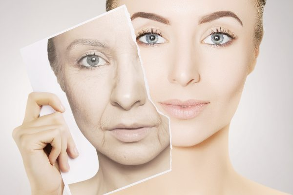
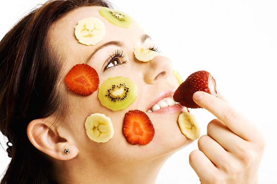
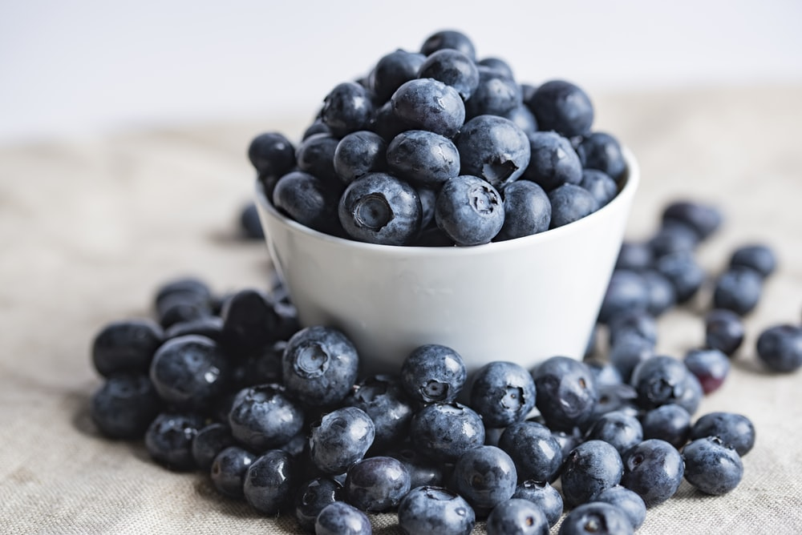
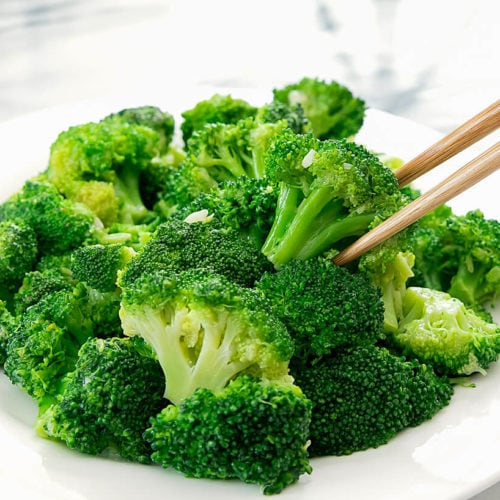
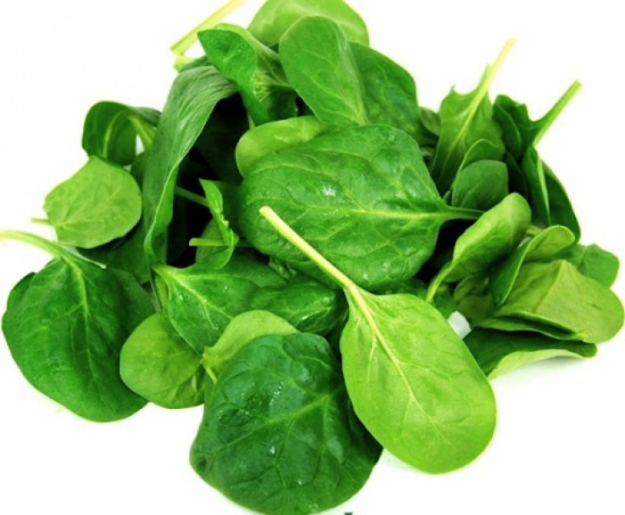
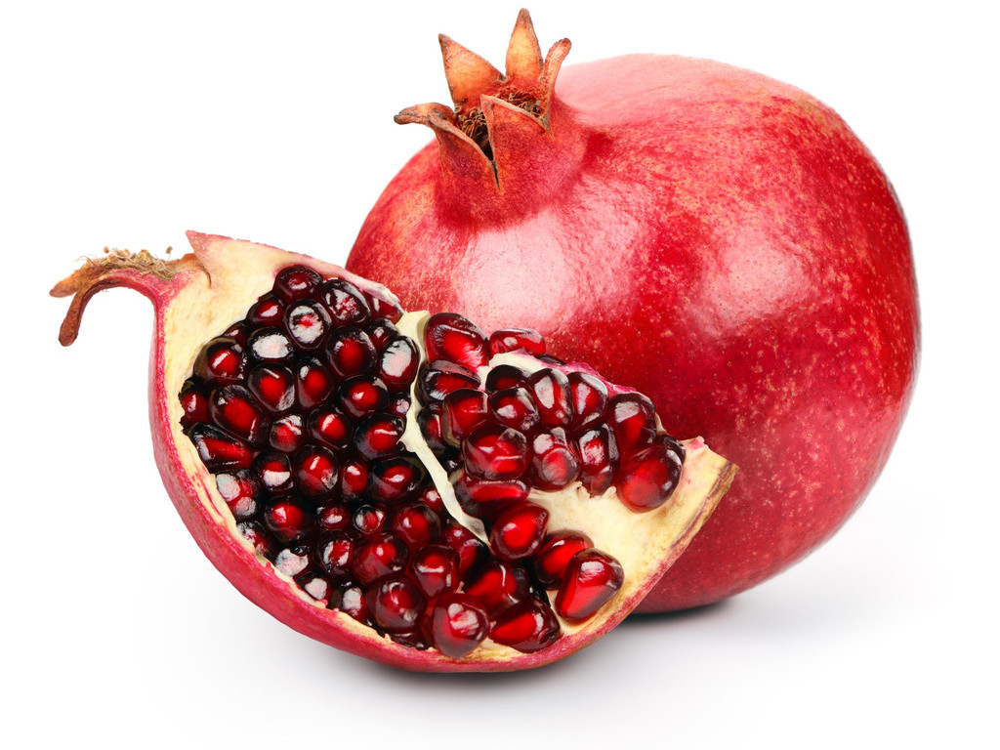

PRE-MATURE AGING

We all are well aware of how aging is inevitable. But there certainly are factors that can accelerate the aging process.
Eating a Poor Diet is one of the core factors that leads to pre-mature aging.
AGING & DIET

One of the most commonly misunderstood aging factors is the effect that food has on the body.
There are foods that you can eat that will help you retain a healthier, younger body and foods that contributes in the aging process.
Choosing a diet that is high in fats, sugars, processed foods, and low in fresh fruits and vegetables creates an internal environment that is anything but youth friendly.
5 ANTI-AGING FOODS FOR YOUR BODY
1. Red bell pepper

Red bell peppers are loaded with antioxidantsTrusted Source which reign supreme when it comes to anti-aging.
In addition to their high content of vitamin C which is good for collagen production.
2. Blueberries

Blueberries are rich in vitamins A and C,
as well as an age-defying antioxidant called anthocyanin.
3. Broccoli

Broccoli is an anti-inflammatory, anti-aging powerhouse packed with: Vitamins C and K,
calcium and fiber. Our body needs vitamin C for the production of collagen,
the main protein in skin that gives it strength and elasticity.
4. Spinach

Spinach is super hydrating and packed with antioxidants that help to oxygenate and replenish the entire body.
It’s also rich in: vitamins A, C, E, and K.
5.Pomegranate

Pomegranates have been used for centuries as a healing medicinal fruit.
High in vitamin C and a variety of potent antioxidants.
Read more